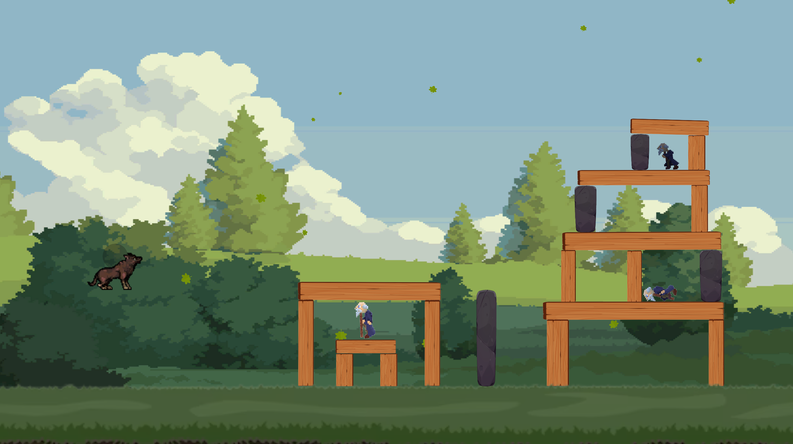
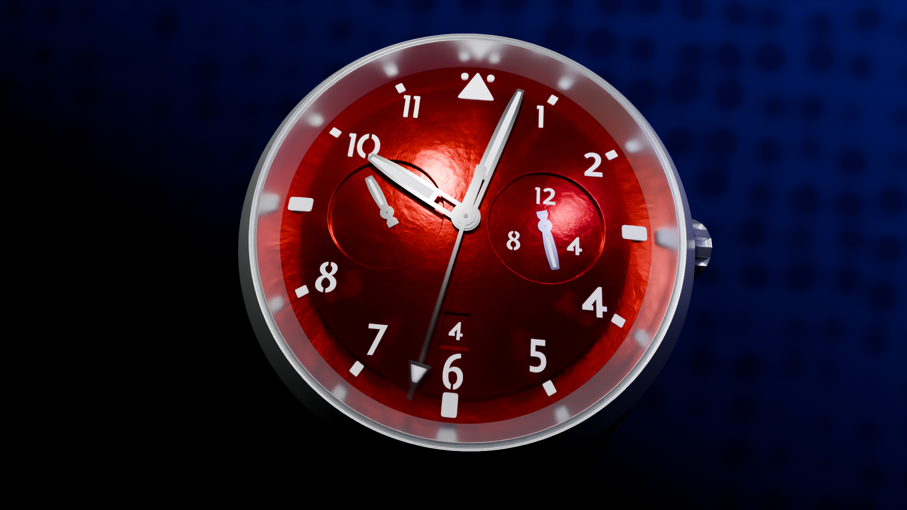

Here are some scores I made for different projects.

Original score for a student game called "Hungry Wolves". This games mixes a Angry bird's inspired puzzle games with a plateformer.

Original score a student short film about what it means to live eternally.
Score for a short animated film made by me. Trying to convey a sens of strangeness and unknown.
Some MIDI choir accompanying the enlightenment of a frog.
A film where I made the song before the animation.